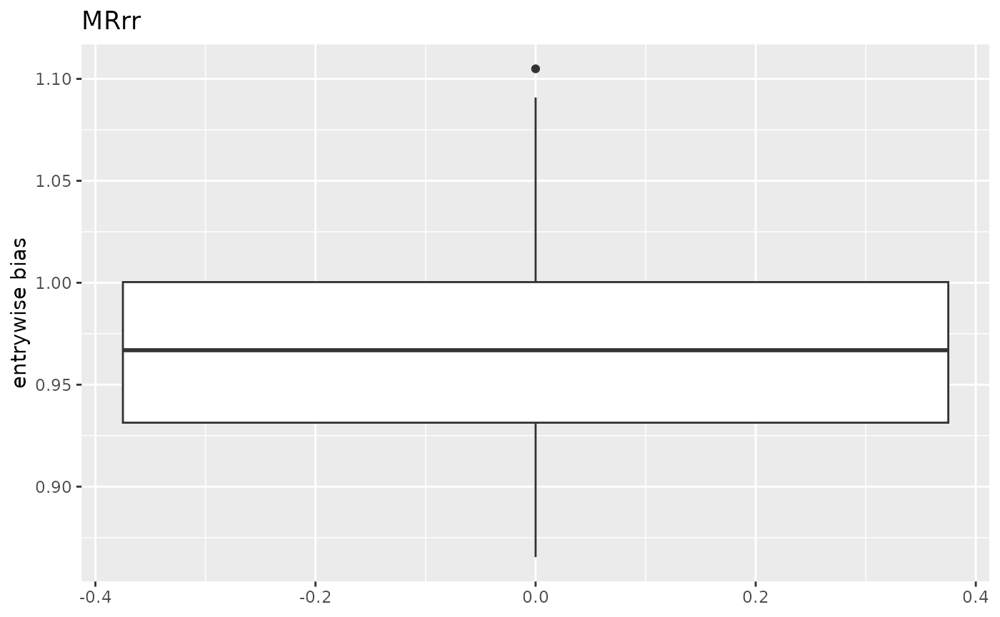
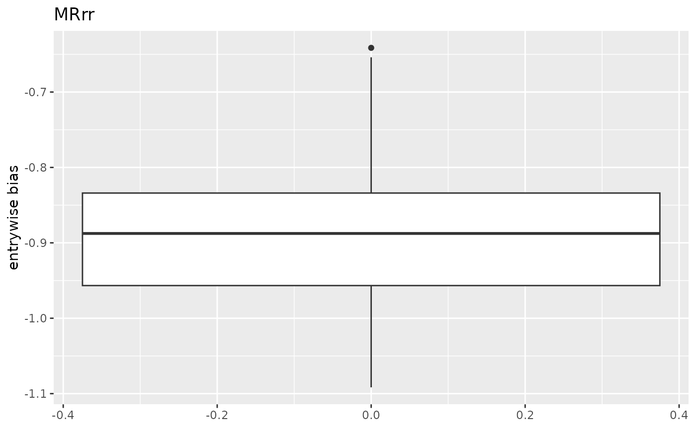
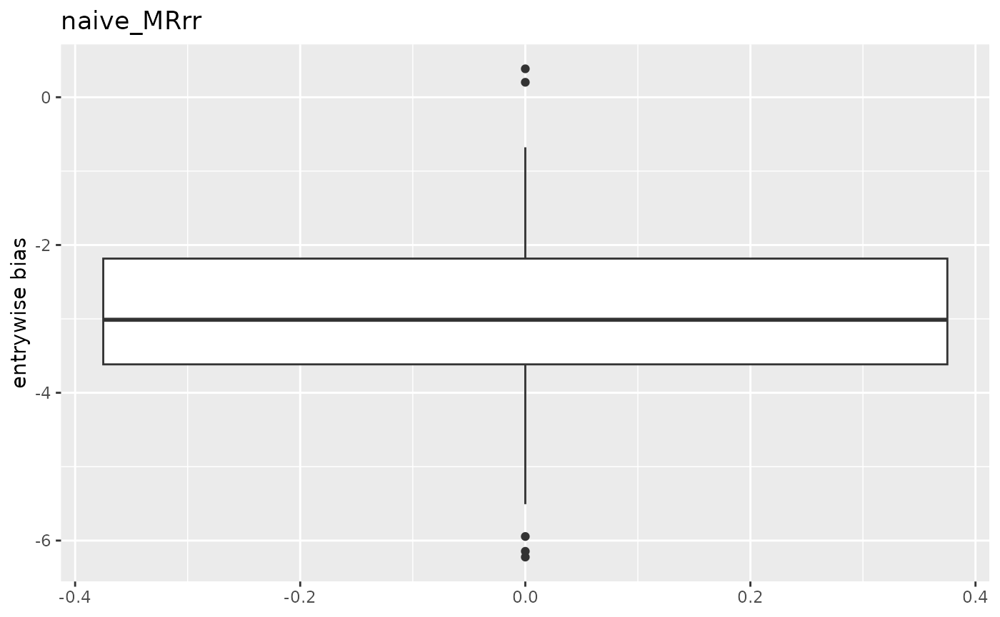
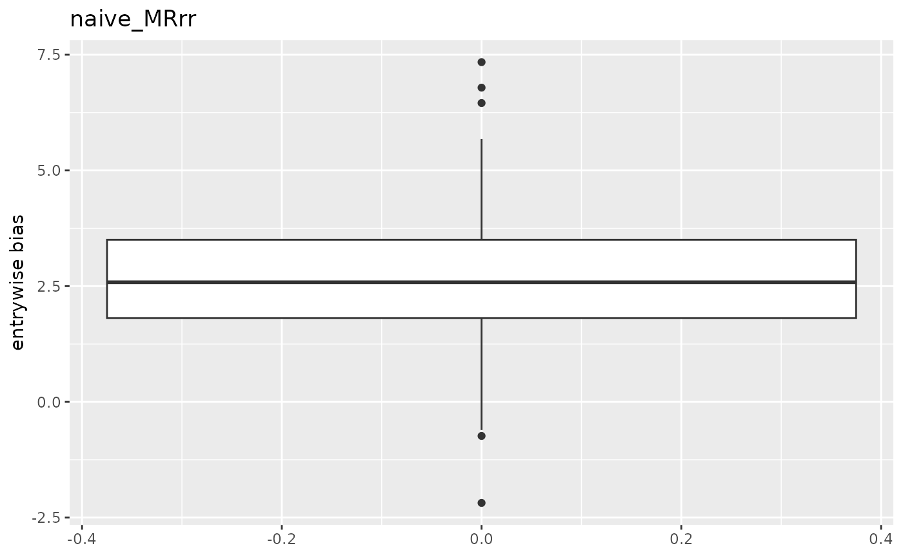
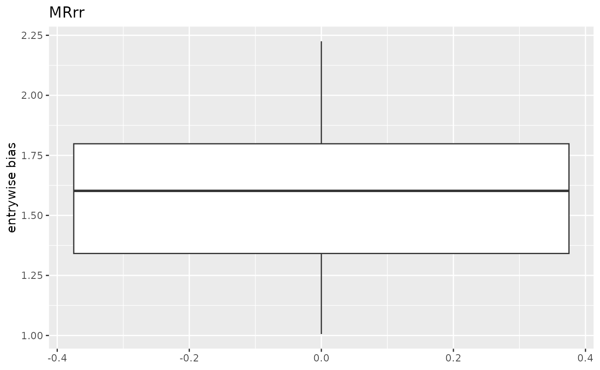

Small demo of the MR.rr package
Yuexiang Peng, Zhilong Zhang
2024-11-20
MR.rr.RmdThis is a vignette for our MR-rr package. This package contains three estimators, including the naive MR-rr estimator, the MR-rr estimator, and the the MR-rr estimator with regularization. The package also contains functions to perform simulation to test the estimators.
We will use the GWAS-Lipid data incorporated in the package to generate the true parameters and a rank 5 causal effect matrix C from 24 dimension exposures to 10 dimension outcomes. Then we will simulate the data with the true parameters and run the naive MR-rr estimator and MR-rr estimator with regularization to compare the performance with respect to true C.
library(MR.rr)
set.seed(123)
sim_result = run_simulation(regularized = TRUE, regularization_rate = 1e-13)
bias_naive_MRrr = sim_result[[1]]
bias_MRrr_regularized = sim_result[[2]]
print("This is a demo of the output format of the run_simulation function:")
#> [1] "This is a demo of the output format of the run_simulation function:"
str(bias_naive_MRrr)
#> List of 5
#> $ 1 : num [1:240, 1:100] -0.306 -0.484 -0.363 -0.956 -0.666 ...
#> $ 0.5 : num [1:240, 1:100] 0.2862 0.0387 0.0183 -0.084 0.2477 ...
#> $ 0.2 : num [1:240, 1:100] -0.1484 -0.4429 -0.0831 -0.0357 -0.103 ...
#> $ 0.1 : num [1:240, 1:100] 0.2835 0.4905 -0.1222 0.2139 -0.0222 ...
#> $ 0.05: num [1:240, 1:100] -0.152 0.282 -0.214 0.189 0.289 ...
print("This is a summary of the entrywise bias of the naive MR-rr estimator:")
#> [1] "This is a summary of the entrywise bias of the naive MR-rr estimator:"
summary(unlist(bias_naive_MRrr))
#> Min. 1st Qu. Median Mean 3rd Qu. Max.
#> -11.359299 -0.243075 -0.001497 0.008942 0.249032 13.449512
print("This is a summary of the entrywise bias of the MR-rr estimator with regularization:")
#> [1] "This is a summary of the entrywise bias of the MR-rr estimator with regularization:"
summary(unlist(bias_MRrr_regularized))
#> Min. 1st Qu. Median Mean 3rd Qu. Max.
#> -14.409892 -0.165789 0.000838 0.001587 0.171261 12.509527From a rough glance, we can see that the MR-rr estimator with regularization has a smaller bias than the naive MR-rr estimator. We can also visualize the results by plotting the boxplots of the bias and the heatmaps of the bias and standard deviation by the following functions.
The boxplots function takes the bias matrices of the naive MR-rr estimator and the MR-rr estimator with regularization as input and plots the boxplot of the entry-wise bias of the causal effect matrix C.
plot_boxplot(bias_naive_MRrr, bias_MRrr_regularized, weight_to_plot = "0.2",
individual_plot = TRUE, rank_by = "bias")
#> [[1]]
#> [[1]]$`(7, 6)`#>
#> [[1]]$`(7, 5)`#>
#>
#> [[2]]
#> [[2]]$`(6, 7)`
#>
#> [[2]]$`(6, 4)`
From the boxplot, we can see that the MR-rr estimator with regularization has a smaller bias than the naive MR-rr estimator. Then, we use the heatmap to visualize the bias and standard deviation of each entry of the estimator comapring to the causal effect C.
plot_heatmap(bias_naive_MRrr, bias_MRrr_regularized, weight_to_plot = "0.2")
#> $iv_strength
#> [1] 1.553794
#>
#> $mean_abs_C_entry
#> [1] 0.7306248
#>
#> $mean_abs_bias_naive
#> [1] 0.2160581
#>
#> $mean_abs_bias
#> [1] 0.1050927
#>
#> $mean_sd_naive
#> [1] 0.1602343
#>
#> $mean_sd
#> [1] 0.1997135We see that when the IV strength is about 1.5, the MR-rr estimator with regularization has a smaller bias and similar standard deviation comparing to the naive MR-rr estimator.
Finally, we test whether the bootstrap 95 percent confidence interval covers the true causal effect matrix C with about 95% probability.
nonpara_bootstrap(me_weight = 0.2, regularized = TRUE, regularization_rate = 1e-13)
#> [1] 0.847875